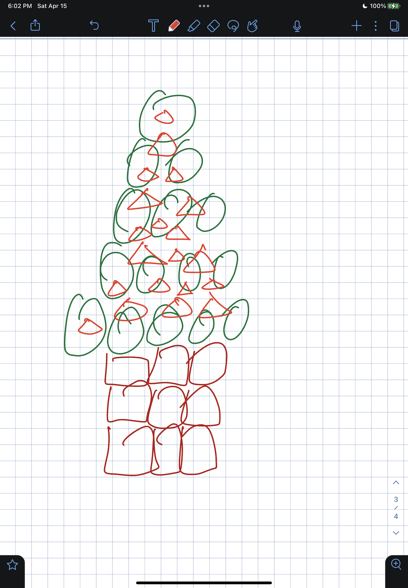
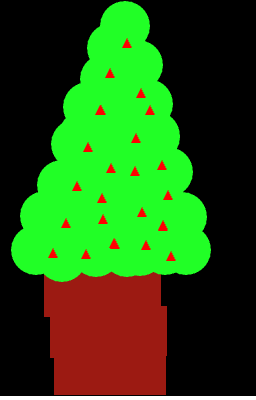

Please use a browser that supports "canvas"
Clear Canvas
Revert
XXX
Drawing Mode:
Squares
Triangles
Circles
Red
Green
Blue
Shape Size:
(Circle) Segment Count:
Added a revert button where it revert the latest g shape that has been drawn. Furthermore, included the basic artwork that I made using this canvas
The art work
Click me to see my artwork
 